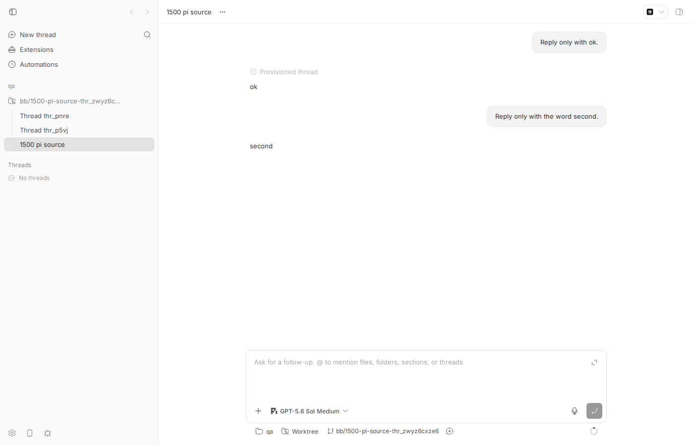
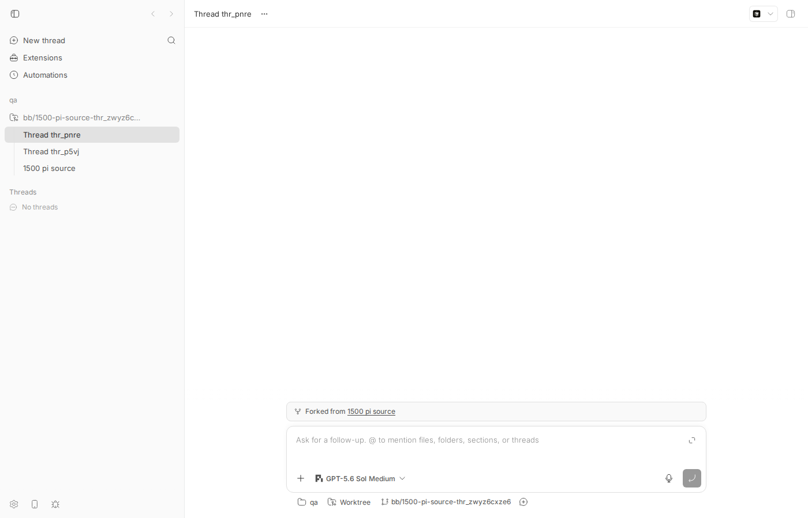

#1500 · Forked threads have an empty timeline — fork should clone source events
1. TL;DR
bb thread fork <pi-thread> (and the Fork button on any assistant message in the app) creates a new thread whose
provider session is a real clone of the source (pi's SessionManager.forkFrom), so the model remembers the whole
conversation — but bb writes nothing about that history into the new thread's events table. The server's timeline
is a pure projection of a thread's own events, so GET /api/v1/threads/:id/timeline returns rows: []
and the UI shows a blank page with only a "Forked from …" chip. This is not a regression: nothing in the fork path
(thread-fork.ts → thread-create.ts → thread.start{fork}) ever copied or projected source events, and
docs/provider-bridge-protocol.md even acknowledges "history the bb timeline does not show".
While reproducing I found a second, deeper defect: sourceSeqEnd is silently ignored for the model's context.
The server only uses it to look up which provider thread id was current at that sequence; it never maps it to the
providerCheckpointId that pi/claude-code/codex record on every turn/completed, and the
thread.start.fork descriptor has no checkpoint field. So --source-seq-end 15 on a two-turn thread produced a fork whose
session file contains both turns and whose model answered "2 — 'Reply only with ok.' and 'Reply only with the word second.'"
The public fork API and the in-app "fork from this message" affordance therefore promise a branch point they do not deliver.
2. Claims vs findings
| Claim (issue) | Status | Evidence |
|---|---|---|
Forked threads come up with an empty timeline; /timeline returns no rows. | Verified | Both forks: {"maxSeq":4,"rows":[]}; sqlite has only 4 bookkeeping rows (client/turn/requested, client/thread/start, thread/identity, system/thread-provisioning). fork-timelines.txt, screenshot below. |
The provider session is cloned fine; ~/.bb/pi-bridge-sessions/<fork>.jsonl has the full conversation. | Verified | Fork session files carry parentSession=…/thr_zwyz6cxze6.jsonl and all 4 messages. pi-session-files.txt. Note the bridge writes to ~/.bb/pi-bridge-sessions even for a dev instance (packages/agent-runtime/src/pi/bridge/session-paths.ts:23). |
Both --workspace reuse and --source-seq-end 30 variants settle idle with no rows. | Verified | thr_p5vjg3mve5 (tip, reuse) and thr_pnrezmtax6 (--source-seq-end 15, reuse) both idle, 0 rows. |
Pi bridge thread/fork already takes providerCheckpointId and calls createBranchedSession. | Verified | packages/agent-runtime/src/pi/bridge/bridge.ts:740-751; handshake advertises fork: "checkpoint" (L561). claude-code and codex bridges also advertise "checkpoint". |
Public fork API only takes sourceSeqEnd and does not map it to a checkpoint. | Verified (and worse) | resolveForkDescriptor uses sourceSeqEnd only for getProviderThreadIdAtOrBeforeSequence; thread.start.fork is {sourceProviderThreadId} only. Live probe: seq-15 fork's model saw turn 2. Repro test assertion 1 fails. |
Synthetic rows inserted directly into events don't appear until restart because the server serves events from an in-memory cache. | Refuted (at the HTTP layer) | Inserted 6 copied rows into the fork via sqlite; GET /timeline immediately returned maxSeq 12 and both conversation rows; bb thread log too. The timeline cache is keyed by maxSeq read from SQLite on every request (routes/threads/data.ts:321). What the reporter likely saw is the browser's React-Query cache not refetching until a realtime event arrives — plausible but I did not test the UI path. |
| #1028 is the same underlying ask (adopt an existing session with history). | Unverified | Not investigated beyond the title; plausible sibling — see Related. |
3. Environment
| bb | 16ceb3a540f81c1189efaffb27a39b1d9443abf5 (main, 2026-08-18), pristine worktree /home/sawyer/projects/bb/.claude/worktrees/wf_debcf606-e4a-15 |
| OS / node | Linux bee 7.0.0-29-generic x86_64 · node v24.18.0 · pnpm workspace |
| Provider | pi bridge (@earendil-works/pi-coding-agent 0.84.0), model GPT-5.6 Sol / medium (project default) |
| Dev instance | App http://localhost:13284, server :21284, host daemon :29284, data dir ~/.bb-dev/projects-bb-.claude-worktrees-wf_debcf606-e4a-15-5fbafe2ca7f4, host host_cyvr8wxjdv, project proj_kx4ifsm5gw (scratch repo /tmp/bb-1500-qa) |
4. Minimal reproduction
4a. Live (CLI + API), ~2 minutes, two cheap pi turns
- Start a dev instance and create a project (see BRIEF). Then spawn a pi thread and give it two turns:
export BB_SERVER_URL=http://localhost:21284 BB_HOST_DAEMON_PORT=29284; unset BB_THREAD_ID bb thread spawn --project proj_kx4ifsm5gw --provider pi --new-environment worktree --permission-mode full \ --title "1500 pi source" --prompt "Reply only with ok." --json # → thr_zwyz6cxze6 bb thread tell thr_zwyz6cxze6 "Reply only with the word second." bb thread log thr_zwyz6cxze6
Source timeline (verbatim):── User ──── Reply only with ok. ── Provisioned thread ── … ── Assistant ── ok ── User ──── Reply only with the word second. ── Assistant ── second
Source events (source-events.txt): turn 1 spans seq 8–15, itsturn/completedat seq 14 carries"providerCheckpointId":"8b087c42…"(= the pi assistant-message entry id); turn 2 spans 16–24. - Fork at the tip and at sequence 15 (end of turn 1):
bb thread fork thr_zwyz6cxze6 --workspace reuse --json # → thr_p5vjg3mve5 bb thread fork thr_zwyz6cxze6 --workspace reuse --source-seq-end 15 --json # → thr_pnrezmtax6
- Inspect both forks (script: bb-1500-inspect.sh):
== thr_pnrezmtax6 Status: idle -- bb thread log thr_pnrezmtax6: ← (nothing) -- GET /api/v1/threads/thr_pnrezmtax6/timeline: {"maxSeq":4,"rows":[],"activePromptMode":null,…,"timelinePage":{"kind":"latest","segmentLimit":20,"returnedSegmentCount":0,"hasOlderRows":false,"olderCursor":null}} -- events rows in sqlite: 1|client/turn/requested 2|client/thread/start 3|thread/identity 4|system/thread-provisioningExpected: the fork's timeline shows the inherited conversation (at least "Reply only with ok." / "ok" for the seq-15 fork). Actual: zero rows for both forks. Full output: fork-timelines.txt. - Prove the provider session was cloned (read-only look at the bridge's session dir; script bb-1500-pi.py):
== ~/.bb/pi-bridge-sessions/thr_pnrezmtax6.jsonl (2469 bytes) ← the --source-seq-end 15 fork session id=01a01337-2072-… parentSession=/home/sawyer/.bb/pi-bridge-sessions/thr_zwyz6cxze6.jsonl message id=36e501ad role=user text='Reply only with ok.' message id=8b087c42 role=assistant text='ok' message id=58725b14 role=user text='Reply only with the word second.' ← should NOT be here for seq-end 15 message id=08ec5afd role=assistant text='second' ← should NOT be here for seq-end 15
- Confirm the model's context on the seq-15 fork includes turn 2:
bb thread tell thr_pnrezmtax6 "How many messages did I send you before this one, and what were they? Reply in one short line." bb thread log thr_pnrezmtax6 ── User ──── How many messages did I send you before this one, and what were they? … ── Assistant ── 2 — “Reply only with ok.” and “Reply only with the word second.”
Expected (for a fork anchored at seq 15): only the first message. Actual: both. (fork-seq15-after-tell.txt)
4b. Screenshots

thr_zwyz6cxze6 shows both exchanges ("ok", "second"). Sidebar lists its two forks thr_pnre… and thr_p5vj….
--source-seq-end 15 fork thr_pnrezmtax6, idle, right after creation. The timeline area is blank; the only trace of provenance is the "Forked from 1500 pi source" chip above the composer. Nothing indicates the model already holds the whole (unbranched) conversation.4c. Unit-level repro (fails on main)
File: apps/server/test/public/issue-1500-fork-empty-timeline.repro.test.ts.
Run from apps/server: pnpm exec vitest run test/public/issue-1500-fork-empty-timeline.repro.test.ts.
It seeds a source thread with two completed turns (turn 1 = seq 3–5, turn/completed at seq 5 with providerCheckpointId: "pi-entry-after-turn-1"), POSTs /api/v1/threads/fork with sourceSeqEnd: 5, and asserts (1) the queued thread.start.fork carries that checkpoint and (2) the fork timeline contains the inherited turn-1 rows. Both fail (vitest-output.txt):
AssertionError: expected { Object (sourceProviderThreadId) } to deeply equal { …(2) }
- Expected
+ Received
{
- "sourceProviderCheckpointId": "pi-entry-after-turn-1",
"sourceProviderThreadId": "pi-source-session",
}
❯ test/public/issue-1500-fork-empty-timeline.repro.test.ts:136:40
AssertionError: expected [] to deeply equal [ 'Reply only with ok.', 'ok' ]
- [
- "Reply only with ok.",
- "ok",
- ]
+ []
❯ test/public/issue-1500-fork-empty-timeline.repro.test.ts:152:21
Show test source
/**
* Repro for get-bb/bb#1500 — "Forked threads have an empty timeline".
*
* Both assertions below FAIL on main (16ceb3a54):
* 1. `thread.start.fork` carries only `sourceProviderThreadId`; the
* requested `sourceSeqEnd` is not translated into the source turn's
* recorded `providerCheckpointId`, so a checkpoint-capable provider (pi)
* clones the whole session tip regardless of `sourceSeqEnd`.
* 2. No source events (or any projection of them) are written to the fork,
* so `GET /threads/:id/timeline` returns zero rows.
*/
import { turnScope } from "@bb/domain";
import { threadResponseSchema } from "@bb/server-contract";
import { describe, expect, it } from "vitest";
import { waitForQueuedCommand } from "../helpers/commands.js";
import { readJson } from "../helpers/json.js";
import {
seedEnvironment,
seedEvent,
seedHostSession,
seedProjectWithSource,
seedThread,
seedThreadRuntimeState,
seedTurnStarted,
} from "../helpers/seed.js";
import { withTestHarness, type TestAppHarness } from "../helpers/test-app.js";
const PROVIDER_THREAD_ID = "pi-source-session";
/** Source thread with two completed turns; turn 1 ends at sequence 5. */
function seedTwoTurnSource(harness: TestAppHarness) {
const { host } = seedHostSession(harness.deps);
const { project } = seedProjectWithSource(harness.deps, {
hostId: host.id,
path: "/tmp/issue-1500",
});
const environment = seedEnvironment(harness.deps, {
hostId: host.id,
projectId: project.id,
path: "/tmp/issue-1500",
});
const sourceThread = seedThread(harness.deps, {
environmentId: environment.id,
projectId: project.id,
});
// seq 1: thread/identity, seq 2: client/turn/requested ("Prior task")
seedThreadRuntimeState(harness.deps, {
environmentId: environment.id,
inputText: "Reply only with ok.",
permissionMode: "full",
providerThreadId: PROVIDER_THREAD_ID,
threadId: sourceThread.id,
});
const base = {
environmentId: environment.id,
providerThreadId: PROVIDER_THREAD_ID,
threadId: sourceThread.id,
};
// Turn 1: seq 3..5
seedTurnStarted(harness.deps, { ...base, sequence: 3, turnId: "turn-1" });
seedEvent(harness.deps, {
...base,
sequence: 4,
type: "item/completed",
scope: turnScope("turn-1"),
data: {
providerThreadId: PROVIDER_THREAD_ID,
item: { type: "agentMessage", id: "msg-1", text: "ok" },
},
});
seedEvent(harness.deps, {
...base,
sequence: 5,
type: "turn/completed",
scope: turnScope("turn-1"),
data: {
providerThreadId: PROVIDER_THREAD_ID,
status: "completed",
providerCheckpointId: "pi-entry-after-turn-1",
},
});
// Turn 2: seq 6..8
seedTurnStarted(harness.deps, { ...base, sequence: 6, turnId: "turn-2" });
seedEvent(harness.deps, {
...base,
sequence: 7,
type: "item/completed",
scope: turnScope("turn-2"),
data: {
providerThreadId: PROVIDER_THREAD_ID,
item: { type: "agentMessage", id: "msg-2", text: "second" },
},
});
seedEvent(harness.deps, {
...base,
sequence: 8,
type: "turn/completed",
scope: turnScope("turn-2"),
data: {
providerThreadId: PROVIDER_THREAD_ID,
status: "completed",
providerCheckpointId: "pi-entry-after-turn-2",
},
});
return { sourceThread };
}
describe("issue #1500 — fork timeline / sourceSeqEnd", () => {
it("passes the source checkpoint for sourceSeqEnd and clones the source timeline", async () => {
await withTestHarness(async (harness) => {
const { sourceThread } = seedTwoTurnSource(harness);
const response = await harness.app.request("/api/v1/threads/fork", {
method: "POST",
headers: { "content-type": "application/json" },
body: JSON.stringify({
sourceThreadId: sourceThread.id,
sourceSeqEnd: 5,
workspace: "reuse",
}),
});
expect(response.status).toBe(201);
const fork = threadResponseSchema.parse(await readJson(response));
const queued = await waitForQueuedCommand(
harness,
({ command }) =>
command.type === "thread.start" && command.threadId === fork.id,
);
if (queued.command.type !== "thread.start") {
throw new Error("Expected thread.start");
}
// (1) FAILS on main: fork === { sourceProviderThreadId } — the
// checkpoint recorded on the seq-5 turn/completed is dropped, so the
// daemon/bridge clones the tip (turn 2 included).
expect.soft(queued.command.fork).toEqual({
sourceProviderThreadId: PROVIDER_THREAD_ID,
sourceProviderCheckpointId: "pi-entry-after-turn-1",
});
// (2) FAILS on main: the fork's timeline is empty.
const timelineResponse = await harness.app.request(
`/api/v1/threads/${fork.id}/timeline`,
);
expect(timelineResponse.status).toBe(200);
const timeline = (await readJson(timelineResponse)) as {
rows: Array<{ kind: string; text?: string }>;
};
const texts = timeline.rows
.filter((row) => row.kind === "conversation")
.map((row) => row.text);
expect(texts).toEqual(["Reply only with ok.", "ok"]);
});
});
});
5. Root cause
5a. The fork path never writes (or lazily projects) source history into the fork
The public fork route → createThreadForkFromRequest
only reads the source's last execution options and permission mode, then delegates to createThreadFromRequest with originKind: "fork", sourceThreadId, and the raw sourceSeqEnd. In
resolveForkDescriptor
the source is only used to derive a { sourceProviderThreadId } descriptor:
const sourceProviderThreadId =
args.sourceSeqEnd === undefined
? getLastProviderThreadId(deps, args.sourceThread.id)
: getProviderThreadIdAtOrBeforeSequence(deps, { // ← the ONLY use of sourceSeqEnd
sequence: args.sourceSeqEnd,
threadId: args.sourceThread.id,
});
…
return { sourceProviderThreadId };
That descriptor rides the daemon thread.start command
(fork: z.object({ sourceProviderThreadId })),
the runtime turns it into a thread/fork adapter command
(runtime.ts) and the pi bridge calls
SessionManager.forkFrom.
The fork thread's own events get only the bookkeeping rows every thread gets (request, start, identity, provisioning) and the timeline
(data.ts) is a projection of exactly those rows. There is no code path — eager copy, lazy join on sourceThreadId/sourceSeqEnd, or a plugin-facing append API — that would make source history visible. The app renders provenance only as the "Forked from" chip
(ThreadDetailView.tsx).
sourceSeqEnd is not even persisted on the fork thread (no column, not in threadResponseSchema), so a lazy client-side "show inherited history up to N" is impossible today too.
The design docs are candid about this: provider-bridge-protocol.md — "A fork: "tip" bridge rejects checkpoint forks … rather than cloning history the bb timeline does not show." So symptom 1 is a known product gap rather than a regression (git history shows the fork path never copied events).
5b. Deeper: sourceSeqEnd is not translated to a provider checkpoint, so the anchor is a lie
The wire and bridges already support branch-at-checkpoint: thread/fork.sourceProviderCheckpointId, the adapter forwards it
(bridge-protocol-adapter.ts), and pi/claude-code/codex all advertise fork: "checkpoint". Every completed turn already records the checkpoint (turn/completed.providerCheckpointId,
provider-event.ts; live value 8b087c42… = pi entry id). The edit-message rewind path already does the seq→checkpoint mapping
(thread-edit-message.ts, precedingProviderCheckpoint) and sends it as thread.rewind.prepare.retainThroughProviderCheckpoint. The public fork path does none of this: thread.start.fork has no checkpoint field, the runtime's thread/fork for a start never sets sourceProviderCheckpointId, and the bridge therefore forks the tip.
Consequence: getStoredProviderThreadIdAtOrBeforeSequence
(events.ts) returns the same provider thread id for any sequence unless the session was replaced mid-thread, so sourceSeqEnd changes nothing in the common case. This affects real users, not only the plugin author: the app's per-message Fork button passes row.sourceSeqEnd
(ThreadTimelineRows.tsx, comment: "Fork clones provider history through this row's source sequence") and the CLI documents --source-seq-end as "Last included source event sequence" — both are wrong today.
6. Proposed fix (first principles)
Two independent changes; (A) is small and mechanical, (B) is the product decision the issue asks for.
A. Honor sourceSeqEnd at the provider (server → daemon → bridge)
- Server (
thread-create.ts:resolveForkDescriptor): whensourceSeqEndis given, resolve the root turn that contains (or is the last one before) that sequence and read itsturn/completed.providerCheckpointId— reuse the logic inthread-edit-message.ts(including the codex special case where the turn id itself is the checkpoint). If the anchor sits inside an unfinished turn or the turn has no checkpoint, fail with a clear 400 (fork_checkpoint_unavailable) instead of silently forking the tip; ifsourceSeqEndis the thread's high-water mark, treat as tip. - Contract: extend
threadStartCommandSchema.forkinpackages/host-daemon-contract/src/commands.tswithsourceProviderCheckpointId?: string(optional is semantically real here: absent = tip). This changes a wire shape → bumpHOST_DAEMON_PROTOCOL_VERSION. - Daemon/runtime: pass it through in
runtime.ts'sthread/forkadapter command (the adapter already forwards it and already rejects it forfork: "tip"providers such as ACP — the server should mirror that withproviderRegistrycapability so ACP forks withsourceSeqEndget a 400 rather than a daemon-side error). - Update the repro test's assertion 1 to be the regression test; add a case for a
tip-only provider.
Risk: pi's createBranchedSession(entryId) retains through the entry — verify off-by-one against the assistant-message id (the live data suggests providerCheckpointId is the assistant entry, i.e. inclusive, matching rewind semantics).
B. Make inherited history visible in the fork's timeline
Options, in order of preference:
- Copy source events into the fork at creation (server, inside the fork transaction): copy the source's rows with
sequence ≤ sourceSeqEnd(or all, for tip), excluding thread-scoped bookkeeping that would confuse runtime (client/thread/start,system/thread-provisioning, pending-interaction rows), rewritingthreadId, minting new ids/turn ids, and settingproviderThreadIdto the source provider thread so nothing treats them as the fork's live session. Then append the fork's own bookkeeping after them. This matches what the model actually knows (after A) and givesbb thread log, search, and the UI the history with zero client work. Cost: duplicated rows for big threads; the sequence renumbering must keepclient/turn/requested↔turn/input/acceptedclientRequestIdpairs intact, and the truncation/pruning jobs need to tolerate copieditem/completedrows. - Lazy projection: persist
sourceSeqEndon the thread and let the timeline builder prepend the source window (read-only) when the thread is a fork. Cheaper on storage but touches pagination/cursors and every consumer (CLI log, search, outline). - The issue's alternative
events.append/ "adopt session" plugin API is a broader surface; if pursued it must ship asexperimental_per AGENTS.md and cover #1028.
Not confident about which of the two projection strategies the maintainers prefer; both are viable. A is unambiguous.
7. PR review
No open PRs are linked to this issue.
8. Related issues
- #1028 — adopt an existing provider session with history (import side of the same gap, per the reporter).
- #1280 — experimental sent-message editing; introduced the checkpoint-rewind plumbing (
thread.rewind.prepare) that fix A should reuse. - #1640 — provider bridge protocol; introduced
fork: none|tip|checkpointand the doc line acknowledging that the timeline does not show cloned history.
9. Appendix
Files
- source-events.txt — source thread events with sequences.
- fork-timelines.txt —
thread show/thread log//timeline/sqlite for both forks. - pi-session-files.txt — decoded pi session JSONL for source and forks.
- fork-seq15-after-tell.txt — model context probe on the seq-15 fork.
- vitest-output.txt — repro test failure output.
- fork-tip.json, fork-seq15.json — CLI fork responses.
Synthetic-row experiment (refutes the "in-memory cache" claim at the API layer)
sqlite3 $DATA/bb.db "INSERT INTO events (id, thread_id, environment_id, scope_kind, turn_id, provider_thread_id, sequence, type, item_id, item_kind, data, created_at) SELECT 'synth_'||sequence, 'thr_p5vjg3mve5', environment_id, scope_kind, turn_id, provider_thread_id, sequence-11, type, item_id, item_kind, data, created_at FROM events WHERE thread_id='thr_zwyz6cxze6' AND sequence IN (16,17,18,19,21,23);" curl -s $BB_SERVER_URL/api/v1/threads/thr_p5vjg3mve5/timeline | python3 -c '…' maxSeq 12 row conversation user 'Reply only with the word second.' row conversation assistant 'second' # bb thread log thr_p5vjg3mve5 showed the same two rows immediately; rows deleted afterwards.
Commands run (abridged)
gh issue view 1500 --repo get-bb/bb --json …
pnpm install --frozen-lockfile --prefer-offline
pnpm exec turbo run build
scripts/bb-dev-app current # App :13284 / Server :21284 / daemon :29284
curl -X POST $BB_SERVER_URL/api/v1/projects … {"name":"qa","source":{"type":"local_path","path":"/tmp/bb-1500-qa","hostId":"host_cyvr8wxjdv"}}
bb thread spawn --project proj_kx4ifsm5gw --provider pi --new-environment worktree --permission-mode full --title "1500 pi source" --prompt "Reply only with ok." --json
bb thread tell thr_zwyz6cxze6 "Reply only with the word second."
bb thread fork thr_zwyz6cxze6 --workspace reuse --json
bb thread fork thr_zwyz6cxze6 --workspace reuse --source-seq-end 15 --json
/tmp/bb-1500-inspect.sh thr_p5vjg3mve5 thr_pnrezmtax6
python3 /tmp/bb-1500-pi.py thr_zwyz6cxze6 thr_p5vjg3mve5 thr_pnrezmtax6
bb thread tell thr_pnrezmtax6 "How many messages did I send you before this one, and what were they? Reply in one short line."
dev-browser --browser bb1500 --headless run /tmp/bb-1500-shot.js # screenshots
cd apps/server && pnpm exec vitest run test/public/issue-1500-fork-empty-timeline.repro.test.ts
pnpm dev:stop